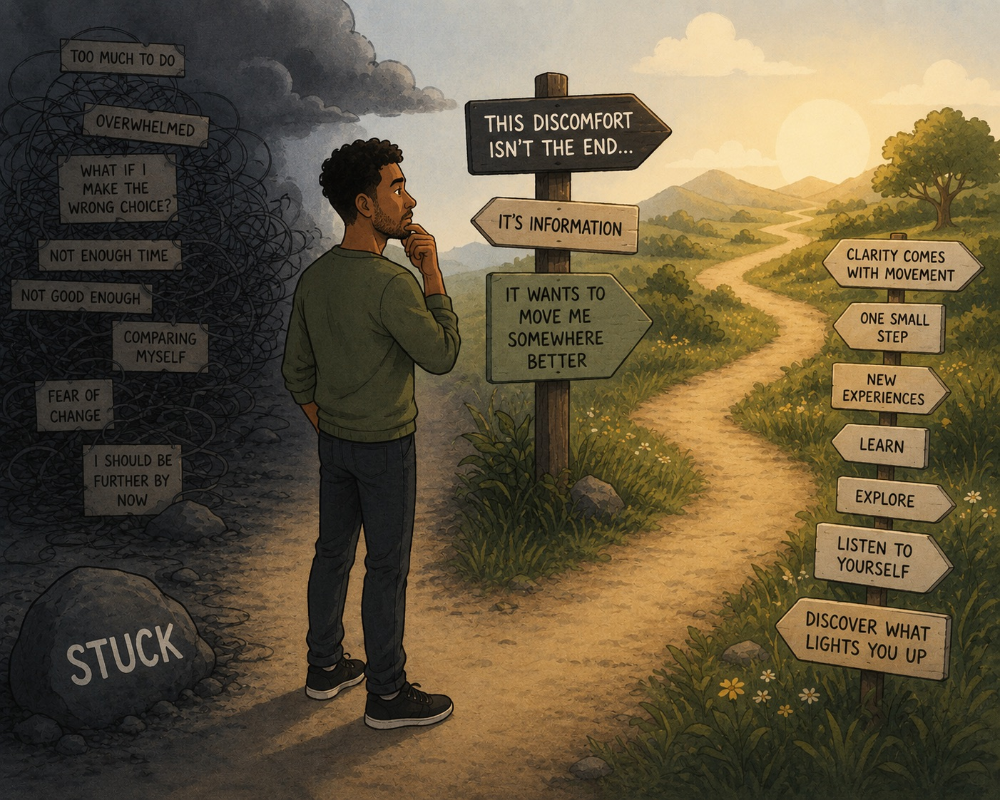

The Useful Discomfort of Feeling Stuck

Stuckness is a horrible feeling.
It convinces us we're failing. That everyone else is moving while we're standing still. That life is hard, we're going nowhere and somehow we've missed the boat.
It's easy to start comparing ourselves to other people and feel quietly defeated by it.
If you're in that place right now, I want to say first: that the feeling is real I know it well and it's agitating to say the least.
But here's something I often say to clients, and to myself too, because it comes up regularly for all of us.
What if feeling stuck isn't evidence that something has gone wrong What if it's actually your mind and body trying to tell you that something needs to change?
Stuckness is often a sign that something no longer fits
We often spend so much energy trying to get rid of uncomfortable feelings that we never stop to ask what they might be trying to tell us.
Sometimes feeling stuck is actually a hopeful sign.
Wait hear me out on this, when we feel stuck it means there's still enough available energy inside you to want something different.
Your nervous system is saying, I've had enough of this. I don't want to stay here anymore. Something needs to move.
Think about it this way.
If we never reached the point of feeling dissatisfied, restless or unfulfilled, why would we ever change anything?
We'd simply settle.
This is fine.
It's the discomfort that creates movement.
Comfort rarely asks anything new of us.
It's often the irritation, the boredom, the restlessness and the stuckness that quietly whisper:
I want more.
I want to learn.
This doesn't fit anymore.
That whisper is doing you a favour, even when it doesn't feel like it.
Comfortable wouldn't move you, I like to think of it as, 'the discomfort is life energy wanting me to move forward or experience something new'.
Sometimes your body knows before your mind does
One of the things I find fascinating is that our nervous system often notices something long before our conscious mind catches up.
Sometimes the feeling of stuckness appears before we've consciously realised what's wrong.
It might be the job.
The relationship.
The routine you've outgrown.
The expectations you've been trying to live up to.
Or simply the way you've been treating yourself.
The feeling comes first.
Understanding often comes later.
Stuckness can be the first sign that an old way of living no longer matches who you're becoming.
Not all stuckness is the same
One of the most helpful questions you can ask yourself is:
What kind of stuck am I?
Sometimes it's overwhelm stuck.
Your head is so full that you can't see the next step.
You probably do know what needs doing, but your mind has become so noisy that everything feels equally urgent.
Other times it's discovery stuck.
You genuinely don't know what you want next.
You've reached the end of one chapter, but the next one hasn't become clear yet.
These two situations need completely different responses.
So what do you actually do?
If you're overwhelmed, don't try to solve everything in your head.
Talk it through with someone you trust.
I often notice that clients barely need to say very much before the fog begins to lift. The simple act of speaking things out loud helps organise what felt impossible only moments earlier.
Sometimes the answer turns out to be almost embarrassingly simple.
"Actually... I just need to start here."
That might mean making a list.
Writing everything onto paper.
Breaking one enormous problem into five smaller ones.
Or simply choosing the first thing instead of trying to choose the perfect thing.
Sometimes clarity isn't missing.
It's just buried underneath overwhelm.
If, instead, you're in discovery mode, movement becomes more important than certainty.
Research.
Read.
Talk to people who are already doing what interests you.
Take a course.
Volunteer.
Visit somewhere new.
Experiment.
You don't need to know exactly where you're going before you begin.
You simply need one small next step that helps build momentum and in turn helps us feel lighter.
Turn down the noise
Sometimes people tell me they're stuck when I don't actually think they are.
Instead it usually turns out that, they're surrounded by too much noise.
Everyone else's opinions.
Everyone else's expectations.
Social media.
Comparison.
Pressure.
When everything is shouting at once, it's almost impossible to hear your own voice.
Sometimes the work isn't about creating more answers.
It's about turning the volume down long enough to hear your own signal again.
A different way to hold it
So if you're feeling stuck right now, perhaps try holding it a little differently.
Rather than asking,
"How do I stop feeling stuck?"
Try asking,
"What is this feeling trying to move me towards?"
Growth often feels uncomfortable before it feels exciting.
We tend to think clarity comes first and movement comes second.
More often, it's the other way around.
We move a little.
We learn something.
Then clarity begins to appear.
Your stuckness might not be evidence that you're failing.
It might simply be evidence that something inside you has begun to outgrow the life you're currently living.
That's uncomfortable.
But it can also be the very beginning of something much better.